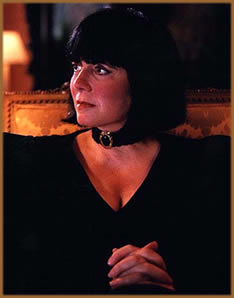
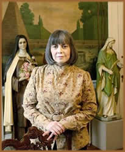

Howard Allen Frances O´Brien,
ou Anne Rice, como ficou conhecida, nasceu em 1941, na cidade
de Nova Orleans, nos Estados Unidos. Ainda jovem decidiu trocar
seu nome para Anne.
Anne Rice desde a infância,
sentia-se diferente das outras crianças, nunca se encaixando
em expectativas sociais. Sua imaginação desenvolveu-se
e populou um mundo de fantasias, usando vários elementos
de mistério e sobrenatural. Cresceu na vizinhança
de Garden District, e suas casas de época e ambientação
soturna, foram grandes inspiradores para os cenários de
seus futuros livros.
Muito
jovem foi exposta à tragédias da vida, perdendo
sua mãe Katherine, dependente alcoólica, aos
14 anos de idade. Dois anos mais tarde seu pai se casa novamente
e a família se muda para a cidade de Richardson,
no Texas, onde conheceria seu futuro marido, o poeta e pintor
Stan Rice.
Aos 20 anos, Anne escreve suas
primeiras histórias, com temas sobre sexo e erotismo, que
na época a fascinavam.
Em 1972, aos 30 anos, Anne perde
sua filha Michele, de cinco anos de idade, vítima de leucemia.
Anne fica arrasada e passa quase um ano alcoolizada, incapaz de
recuperar-se de tal choque. Quando em 1973, em cerca de 5 semanas,
ela escreve o livro Entrevista com o Vampiro, a partir
de um conto produzido em 1969. Recusado na primeira tentativa
de publicação, em 1974, acabou saindo dois anos
depois, pela editora Knopf, que até hoje publica os livros
da autora.
No livro, Anne retrata sua filha
na personagem Claudia de 6 anos de idade, que é forçada
a viver eternamente como criança, após virar vampira.
Tal sentimento de "imortalidade", ocasionado por tais
tragédias em sua vida, acabam sendo o grande motivo de
tal fascínio por Vampiros, personagens principais de seus
livros seguintes.
Assim, esse primeiro livro, que
acabou virando um grande, e certamente o maior, sucesso da escritora,
deu origem a uma série de romances sobre vampiros, intituladas
"As Crônicas Vampirescas", que incluem ainda:
O vampiro Lestat (1985), A rainha dos condenados
(1988), A história do ladrão de corpos
(1992), Memnoch, o demônio (1995), Pandora
(1998), O vampiro Armand (1998), O vampiro Vittorio
(1999), Merrick (2000), Sangue e Ouro (2001),
Fazenda Blackwood (2002) e Cântico de Sangue
(2003).
Outros romances famosos da escritora,
também tem temática sobrenatural, como por exemplo:
A Hora as bruxas (1990). Com o seu incrível fascínio
pela música, escreveu sobre a mesma em dois romances, Violino
(1996) e Chore para o céu (1982), história
de um "castratto" veneziano do século XVIII.
Em outros gêneros, Anne Rice
usou pseudônimos como o de Anne Rampling em romances
mais comerciais: Exit to Eden (1985) e Belinda
(1986), e o de A.N. Roquelaure na trilogia erótica
Beauty (1983-1985), na qual conta a fábula da
Bela Adormecida, começando com um príncipe a despertando
com requintes sadomasoquistas.
Ainda assim o ponto forte da autora
sempre foi sua incursão à fantasia. Geralmente os
personagens sobrenaturais que cria, procuram por sua identidade
numa espécie de "subcultura vampírica"
que mescla morte e sexualidade. Ela invariavelmente apresenta
seus vampiros como indivíduos com suas paixões,
teorias, sentimentos, defeitos e qualidades como os seres humanos,
mas tendo que lutar pela sua sobrevivência através
do sangue de suas vítimas e sua própria existência,
que para alguns deles, é um fardo a ser carregado através
dos milênios. São temas também desses romances
o homossexualismo, o ateísmo, a imortalidade, a vaidade
e as relações entre o bem e o mal.
Dois de seus livros tornaram-se
filmes: Entrevista com o Vampiro (1994) e A Rainha
dos Condenandos (2002). O primeiro foi acompanhado de perto
por Anne Rice que fez questão que a produção
não fugisse dos elementos oriundos ao livro. Acabou se
tornando um grande sucesso do cinema. Já o filme A
Rainha dos Condenados foi feito sem sua colaboração
e acabou sendo pouco fiel ao livro, não agradando ao público
e sendo bastante criticado.
Em
2002, seu marido Stan Rice morre, vítima de um tumor
cerebral. E Anne passa por mais uma fase turbulenta, descobrindo
inclusive ser diabética.
Assim, em 2005, Anne declara que
deixaria de escrever obras sobre vampiros, bruxas e outros seres
fantásticos, e se dedicaria a outros gêneros literários.
Lança então, mesmo ano, o livro Cristo Senhor:
a Saída do Egito, que retrata o jovem Jesus, então
aos sete anos de idade, partindo do Egito com a família
para voltar para sua casa em Nazaré.
Em 2008, Anne lança um livro
de memórias intitulado Chamado para fora da escuridão:
uma confissão espiritual, o que demonstra claramente
seu novo rumo literário, "o cristão".
Nele a escritora se remete a sua infância e em épocas
em que possuía uma fervorosa fé católica
e que os últimos acontecimentos em sua vida acabaram fazendo
retornar tal sentimento de devoção.
Independente dos estilos, temas
ou ideologias que a escritora possa seguir daqui para frente,
Anne Rice será sempre lembrada como a rainha do horror
gótico e vampírico.
Por Spectrum
Obras
Disponíveis:
Contos (Downloads)